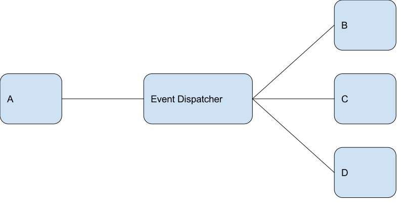
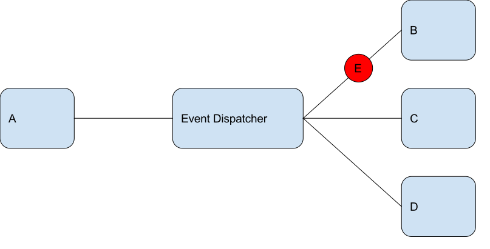

Drupal 8 and the Symfony Event Dispatcher
Agenda
- Events
- Creating / dispatching an event
- Responding to an event
- Workflow of a request
Event
thing that happens or takes place, especially one of importance.
The New Zealand Pocket Oxford Dictionary
Event
... an event is an action or occurrence recognised by software that may be handled by the software.
https://en.wikipedia.org/wiki/Event_(computing)
Event
Something happened, so something else might happen , and we know about it.
Me
Lots of things happen in an application
Same terminology
jQuery('#eric').click(function (event) {
console.log('Hello world!');
});
Same pattern
- Hooks
- Actions
- Rules
Event Dispatcher
The EventDispatcher component provides tools that allow your application components to communicate with each other by dispatching events and listening to them.
https://symfony.com/doc/current/components/event_dispatcher.html
Event Dispatcher
Photo: 123RF - http://www.radionz.co.nz/
Event Dispatcher
Event Dispatcher

Event Dispatcher
Event Dispatcher
Event Dispatcher
Lets build a form
We have a form that collects a name and email.
- Log the submission
- Send an email to the user
- Add the user to our CRM
- Post to slack
- Calculate if the user gets prize
Submission
public function submitForm(array &$form, FormStateInterface $form_state) {
$name = $form_state->getValue('name');
$email = $form_state->getValue('email');
$this->logger('example_form')->notice('Somebody submitted the form...');
}
Add our first behaviour
public function submitForm(array &$form, FormStateInterface $form_state) {
$name = $form_state->getValue('name');
$email = $form_state->getValue('email');
$this->logger('example_form')->notice('Somebody submitted the form....');
$this->mailer->mail('example', 'example_form', $email, $this->currentUser->getPreferredLangcode(), ['name' => $name]);
}
Add dependencies
public function create(ContainerInterface $container) {
$form = new static();
$form->setCurrentUser($container->get('current_user'));
$form->setMailer($container->get('plugin.manager.mail'));
return $form;
}
All behaviours added
public function submitForm(array &$form, FormStateInterface $form_state) {
$name = $form_state->getValue('name');
$email = $form_state->getValue('email');
$this->logger('example_form')->notice('Somebody submitted the form.');
$this->mailer->mail('example', 'example_form', $email, $this->currentUser->getPreferredLangcode(), ['name' => $name]);
$this->crmManager->add($email, ['name' => $name]);
$this->slack->sendMessage('A new user has submitted your awesome form', 'info');
$date = new \DateTime('@' . $this->time->getRequestTime();
if ($date->format('N') === 1 && $date->format('i') === 29) {
drupal_set_message('Congratulations you are a winner...');
}
}
Dependencies
public function create(ContainerInterface $container) {
$form = new static();
$form->setCurrentUser($container->get('current_user'));
$form->setMailer($container->get('plugin.manager.mail'));
$form->setCrmManager($container->get('custom.crm_manager'));
$form->setSlack($container->get('slack.manager'));
$form->setTime($container->get('datetime.time'));
return $form;
}
Problems
- Submit method is doing too many things
- Form class knows too many things
- Hard to maintain
- Hard to reuse
Dependency graph
Dependency graph
Lines of communication
Dispatching an event
Designing an event
- What information are we communicating?
- Can that information change?
- Are we collecting any additional information along the way?
The Static Events Class
final class ExampleModuleEvents {
/** docBlock */
const SIGNUP_FORM_SUBMIT = 'module_name.signup_form_submit';
}
Extend the event class
use Symfony\Component\EventDispatcher\Event;
class SignupFormEvent extends Event {
protected $submittedName;
protected $submittedEmail;
public function __construct($name, $email) {
$this->submittedName = $name;
$this->submittedEmail = $email;
}
public function getSubmittedName() {
return $this->submittedName;
}
public function getSubmittedEmail() {
return $this->submittedEmail;
}
}
Back to the form
public function create(ContainerInterface $container) {
$form = new static();
$form->setCurrentUser($container->get('current_user'));
$form->setMailer($container->get('plugin.manager.mail'));
$form->setCrmManager($container->get('custom.crm_manager'));
$form->setSlack($container->get('slack.manager'));
$form->setTime($container->get('datetime.time'));
return $form;
}
Inject the event dispatcher into the form
public function create(ContainerInterface $container) {
$form = new static();
$form->setEventDispatcher($container->get('event_dispatcher'));
return $form;
}
Form
protected $eventDispatcher;
public function setEventDispatcher(EventDispatcherInterface $eventDispatcher) {
$this->eventDispatcher = $eventDispatcher;
}
Dispatch the event
public function submitForm(array &$form, FormStateInterface $form_state) {
$name = $form_state->getValue('name');
$email = $form_state->getValue('email');
$event = new SignupFormEvent($name, $email);
$this->eventDispatcher->dispatch(ExampleModuleEvents::SIGNUP_FORM_SUBMIT, $event);
}
Listening for events
EventSubscriberInterface
public static function getSubscribedEvents();Implement EventSubscriberInterface
use Symfony\Component\EventDispatcher\EventSubscriberInterface;
class RegistrationMailer implements EventSubscriberInterface {
protected $currentUser;
protected $languageManager;
public function __construct(MailManagerInterface $mailManager, AccountProxyInterface $currentUser) {
$this->mailManager = $mailManager;
$this->currentUser = $currentUser;
};
public static function getSubscribedEvents() {
$events = [];
$events[ExampleModuleEvents::SIGNUP_FORM_SUBMIT][] = ['onRegister'];
return $events;
}
public function onRegister(SignupFormEvent $event) { ... }
}
Within the subscriber
public function onRegister($event) {
$module = 'event_demo';
$key = 'register_interest';
$to = $event->getSubmittedEmail();
$params = ['name' => $event->getSubmittedName()];
$language = $this->currentUser->getPreferredLangcode();
$this->mailManager->mail($module, $key, $to, $language, $params);
}
services.yaml
services:
example_module.registration_mailer:
class: "Drupal\example_crm_module\EventSubscriber\RegistrationMailer"
arguments: ["@plugin.manager.mail", "@current_user"]
tags:
- { name: event_subscriber }
Detour?
Service
Any PHP object that performs some sort of "global" task.
http://symfony.com/doc/current/book/service_container.html
Service container
Dependency Injection
Inject dependencies.
Not Dependency Injection:
public function myMethod() {
$slack = new SlackClient();
$slack->sendMessage('This is bad.', 'info');
}
Dependency Injection:
protected $slack;
public function __construct(SlackClientInterface $slack) {
$this->slack = $slack;
}
public function myMethod() {
$this->slack->sendMessage('This is better.', 'info');
}
Step 1: Configuration

Step 2: Magic

When we want this
arguments: ["@plugin.manager.mail"]Or this
$container->get('@plugin.manager.mail')Step 3: Service Container
Lines of communication
Dependency graph
Why is this good?
- Single Responsibility Principle
- Open / Closed
- Loose Coupling
Why might this be bad?
- Loose Coupling
Going further with events
- Priorities
- Stopping the event flow
Going futher with events
public static function getSubscribedEvents() {
$events[ExampleModuleEvents::SIGNUP_FORM_SUBMIT][] = ['onRegister'];
return $events;
}
Priority
public static function getSubscribedEvents() {
$events[ExampleModuleEvents::SIGNUP_FORM_SUBMIT][] = ['onRegister', 0];
return $events;
}
Priority
public static function getSubscribedEvents() {
$events[ExampleModuleEvents::SIGNUP_FORM_SUBMIT][] = ['onRegister', 1000];
return $events;
}
Stopping an event
public function onRegister($event) {
$event->stopPropagation();
}
Workflow of a typical request
- Request recieved
- Resolve controller
- Resolve controller arguments
- Call controller
- Response
Workflow of a request
- Request recieved
- kernel.request
- Resolve controller
- kernel.controller
- Resolve controller arguments
- kernel.controller_arguments
- Call controller
- kernel.view
- kernel.response
- Response delivered
- kernel.terminate
- kernel.exception
KernelEvent
private $kernel;
private $request;
private $requestType;
GetResponseEvent Event
private $response;
public function getResponse()
{
return $this->response;
}
public function setResponse(Response $response)
{
$this->response = $response;
$this->stopPropagation();
}
Chain of responsibility
Chain of responsibility
Chain of responsibility

kernel.request
- RedirectLeadingSlashesSubscriber, 1000
- MaintenanceModeSubscriber, 30
kernel.exception
404 pages
- DefaultExceptionHtmlSubscriber
- Fast404ExceptionHtmlSubscriber
Fast 404 listener
$request = $event->getRequest();
$config = $this->configFactory->get('system.performance');
$exclude_paths = $config->get('fast_404.exclude_paths');
if ($config->get('fast_404.enabled') && $exclude_paths && !preg_match($exclude_paths, $request->getPathInfo())) {
$fast_paths = $config->get('fast_404.paths');
if ($fast_paths && preg_match($fast_paths, $request->getPathInfo())) {
$fast_404_html = strtr($config->get('fast_404.html'), ['@path' => Html::escape($request->getUri())]);
$response = new Response($fast_404_html, Response::HTTP_NOT_FOUND);
$event->setResponse($response);
}
}
Default exception listener
$this->makeSubrequest($event, Url::fromRoute('system.404')->toString(), Response::HTTP_NOT_FOUND);